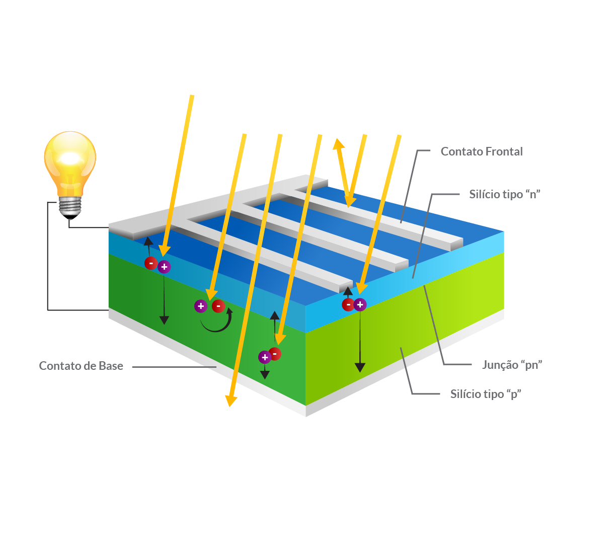

Em uma célula fotovoltaica, os fótons são absorvidos pela parte "P" do semicondutor.
É muito importante "afinarmos" o semicondutor tipo-p com as propriedades do fótons
que irão entrar na célula afim de "livrar-mos" o máximo de elétrons possíveis.
Outro desafio
é impedir que os elétrons se encontrem com as lacunas e se recombinem
antes deles
"escaparem" da célula. Para impedir isto, projetamos o material de forma
que os elétrons sejam
"liberados" o mais próximo possível da junção, de forma que o
campo elétrico possa ajudar a
enviá-los para a parte tipo-p e para fora do circuito
elétrico. Maximizando todas estas características,
nós melhoramos a eficiência de conversão da cela de PV.
Para fazer uma célula solar eficiente, tentamos maximizar a absorção, minimizando a reflexão e
recombinação,
e assim maximizamos a condução.